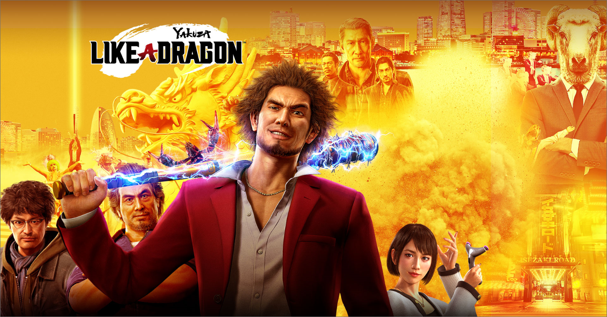

How RGG Studio is Charting a New Future With Lost Judgment and Yakuza: Like a Dragon


For Over A Decade The Yakuza Series Has Quietly Thrived. But While It's Been Incredibly Popular In Its
Native Japan, It's Been Something Of A Niche Series In North America.
yakuza's Fanbase Continued
To Grow, Though, And In The Past Four Years — Starting With The Critically-acclaimed Yakuza 0 — Ryu Ga Gotoku
Studio [rgg Studio] Has Hit Something Of A Breakthrough. Not Only Was Yakuza 0 Mentioned In Many Game Of The
Year Conversations, Rgg Studio Released Two Updated Remasters (yakuza Kiwami 1 And 2), All The Mainline Yakuza
Games On Pc, And A New Series Called Judgment Set In The Same Shared Universe As Yakuza.
in 2020
Saw Rgg Studio Take The Yakuza Series In A Bold New Direction. Yakuza: Like A Dragon Introduced A New Hero In
Ichiban Kasuga As Well As A New Turn-based Rpg Gameplay Format. The Latter Will Be The Norm For The Series
Going Forward, Series Creator Toshihiro Nagoshi Says.
"the Yakuza Series Has Been Transformed Into A Turn-based Rpg," Nagoshi And Producer Kazuki Hosokawa
Tell Ign In A Joint Written Interview.
for Fans Of The Classic Action Gameplay, The Style That
Defined The Original Games Will Live On Through The Judgment Series. "[rgg Studio] Has Accumulated
Resources And Know-how Of Making Flashy And Exhilarating Action Games That Are Effortless To Enjoy. We Decided
That We Should Let Our Signature Action Gameplay Live On Through Lost Judgment."
announced
Earlier Today, Lost Judgment Is A Sequel To 2017's Judgment, Starring Yet Another New Hero: The
Lawyer-turned-detective Takayuki Yagami. Lost Judgment Crosses Between The Legal World Of Japan's Court
Systems And The Yakuza-filled Criminal Underworld. Combat Involves Switching Between Different Martial Arts
Styles And Brawling In The Streets, But Judgment Also Has New Mechanics Like Climbing And Some Light
Parkour.
"lost Judgment Is Different From [yakuza] In That The Protagonist Is A Detective, So
We Have Tried To Make The Investigative Gameplay Elements Fun And Unique," The Two Producers Say In Our
Interview. "one Example Is The Scene Where Yagami Can Perform Athletic Actions, As You Mentioned."
the
Developers Did Concede That These New Mechanics Could Work In A Yakuza Game As Well Saying "it Would Be
Interesting To See The Protagonist Of A Yakuza Game Take On A Mission With An Entirely Different Feel From
Lost Judgment With This Gameplay Element," And That Such An Idea Isn't "that Far-fetched."
indeed,
Yakuza And Judgment Serve As The Two Pillars For Rgg Studio, And The Developers Are Always Thinking Of
What's Next. Whether That's A Sequel To One Of Its Franchises Or Something New.
"as
Long As There Are Fans, They Will Still Expect The Next Game [in A Series]," Rgg Studio Says When Asked If
There Are Plans For Different Game Series Set In The Shared World Of Yakuza. "so It's A Balancing Act
Of Meeting Those Expectations While Also Wanting To Challenge And Try New Things As Creators."
"as
Creators, We Also Have The Desire To Challenge Ourselves With Completely Different Titles."
By Matt T.M. Kim . May 7, 2021
